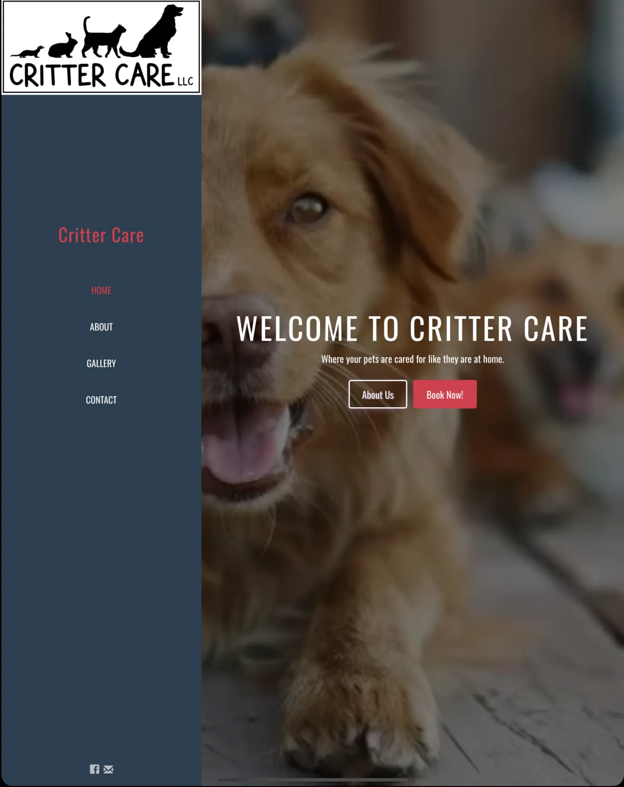
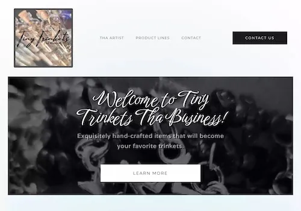
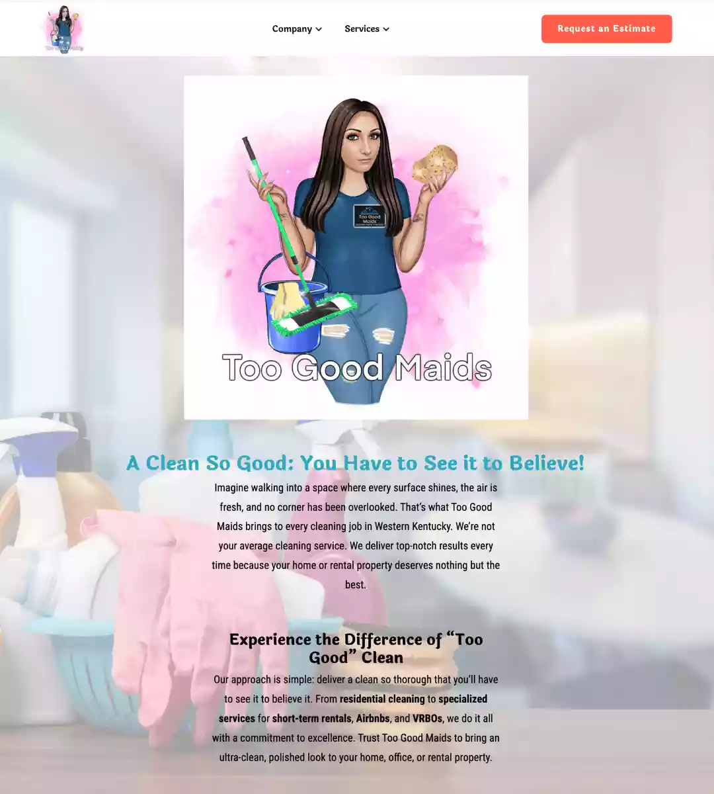
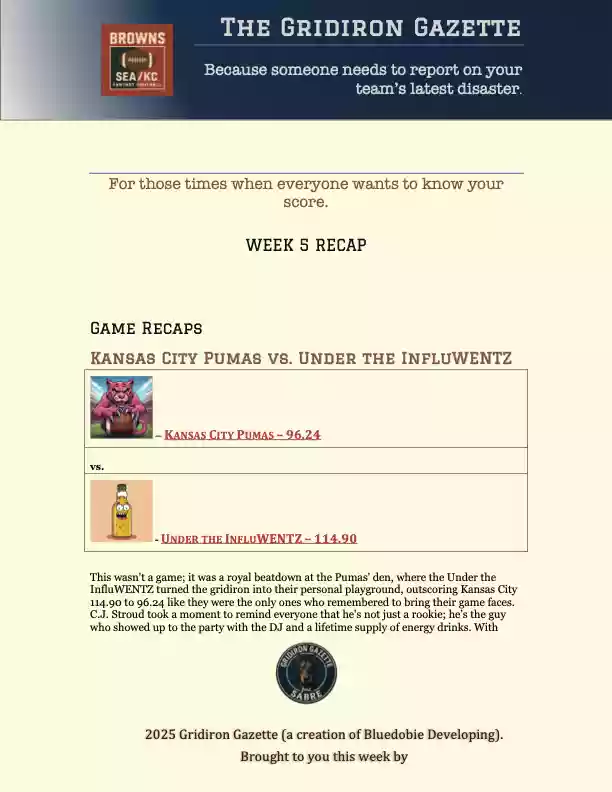
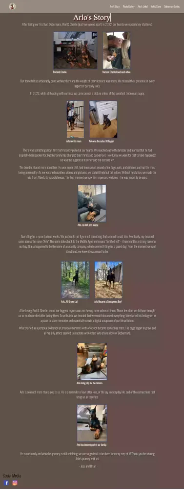
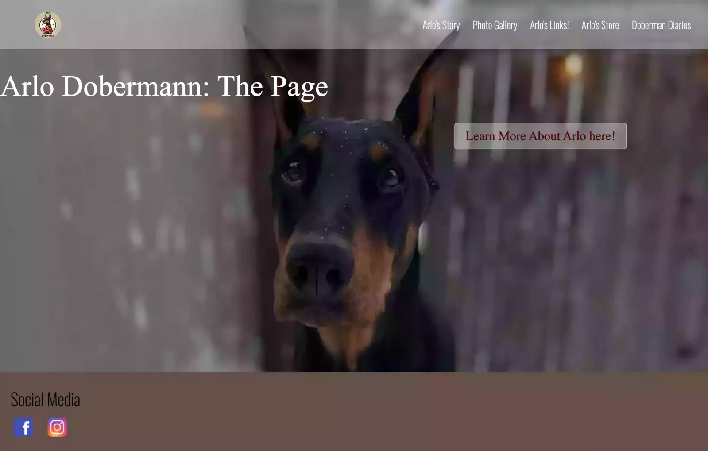
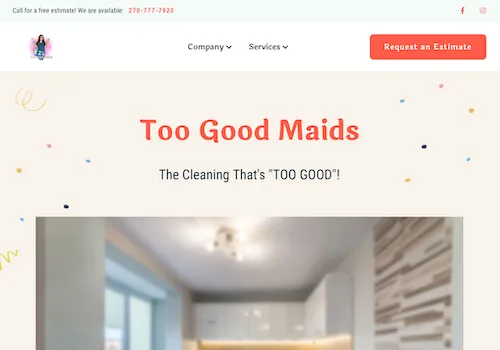
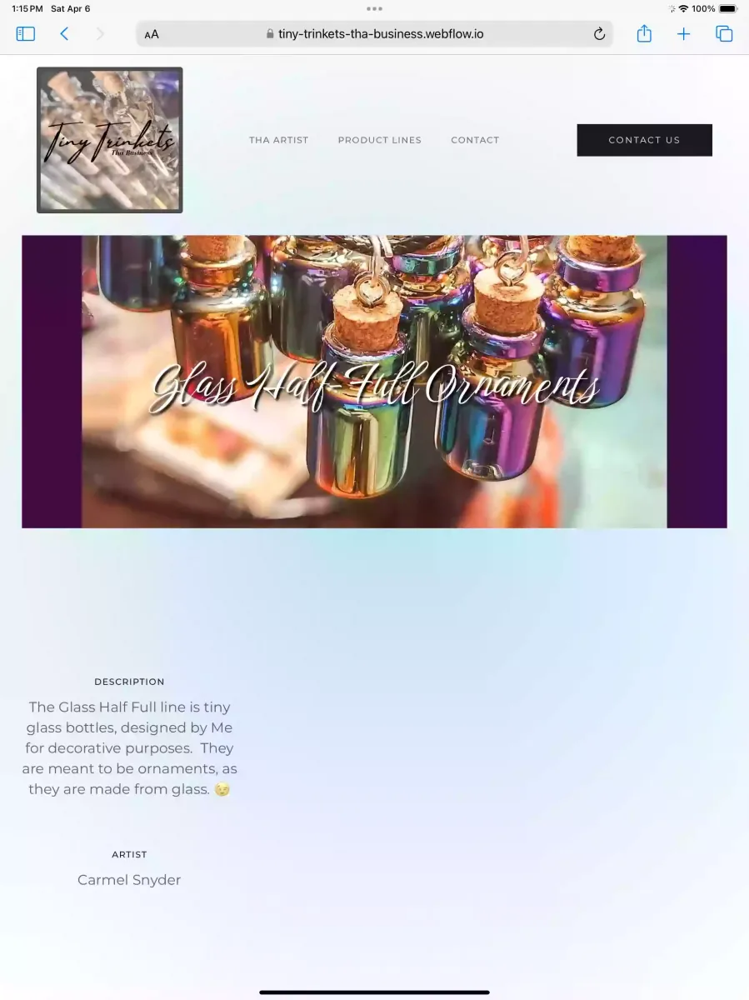

 - 2026-03-07 at 13.07.02.webp)





Small websites. Done fast. Under $3k. This is what I build - landing pages, portfolios, business sites. Every project here was delivered on time and actually works.








These are real websites built for real businesses — designed to attract customers, not just look nice.
Small business sites, portfolios, and digital products. Every project delivered on time, under $3k, and functional from day one.
Cleaning service site built for a growing business with two different kinds of customers - residential and commercial - who don't make decisions the same way. Clean, minimal design with easy booking and clear service info. Mobile-friendly because most customers book from their phones.
What worked: Simple navigation, fast load times, and a prominent booking CTA. The business grew enough after launch to hire an additional cleaner within three months, and two more by the one-year mark.
A staging redesign that splits the site into separate residential and commercial journeys, so each visitor lands in a section built for them. Also moved off Webflow to GitHub Pages with Cloudflare, cutting recurring hosting costs.
Portfolio site for handcrafted trinkets and jewelry. Built to showcase products beautifully while working for both retail customers and wholesale vendors. Image-heavy design with smooth galleries and easy navigation.
What worked: Big, clear product photos. Clean layout that doesn't compete with the jewelry. Separate sections for retail vs. wholesale so both audiences get what they need fast.
Pet care and grooming site for a local business. Warm, welcoming design with easy-to-find service info and pricing. Built to make booking simple and showcase what makes them different from big chain groomers. The business has since closed, but the site delivered exactly what they needed during their operation.
What worked: Friendly design that matches their personal approach. Clear service descriptions so customers know exactly what they're getting. Mobile-optimized because pet owners book on the go.
This project is no longer active. The design and development are shown here as part of my portfolio.
Petfluencer hub for Arlo, a Doberman with 51K+ Instagram followers, an Etsy shop, and affiliate partnerships. A five-page site organized around how his audience already behaves - story, gallery, links, store, and a live Instagram feed.
What worked: A custom on-site link hub that replaced a third-party link-in-bio tool. Embedded Etsy and Instagram widgets that keep the site fresh without manual updates. Delivered in one week.
Automated fantasy football recap product built to replace 2-3 days of manual weekly writing with about five minutes of automation - without losing the personality that keeps a league engaged all season.
What worked: An AI content pipeline pulling real ESPN league data, weekly awards and callouts with a consistent voice, and branded PDF output ready to drop into a group chat. See a sample PDF.
Need a small website? I build landing pages, portfolios, and business sites for under $3k. 2-4 week turnaround. Western Kentucky based, working everywhere.
I build small websites for people who need them done right. No agency overhead, no 6-month timelines. Projects under $3k, delivered in 2-4 weeks. Based in Western Kentucky, working with clients everywhere.
{kind=link}
{kind=link}